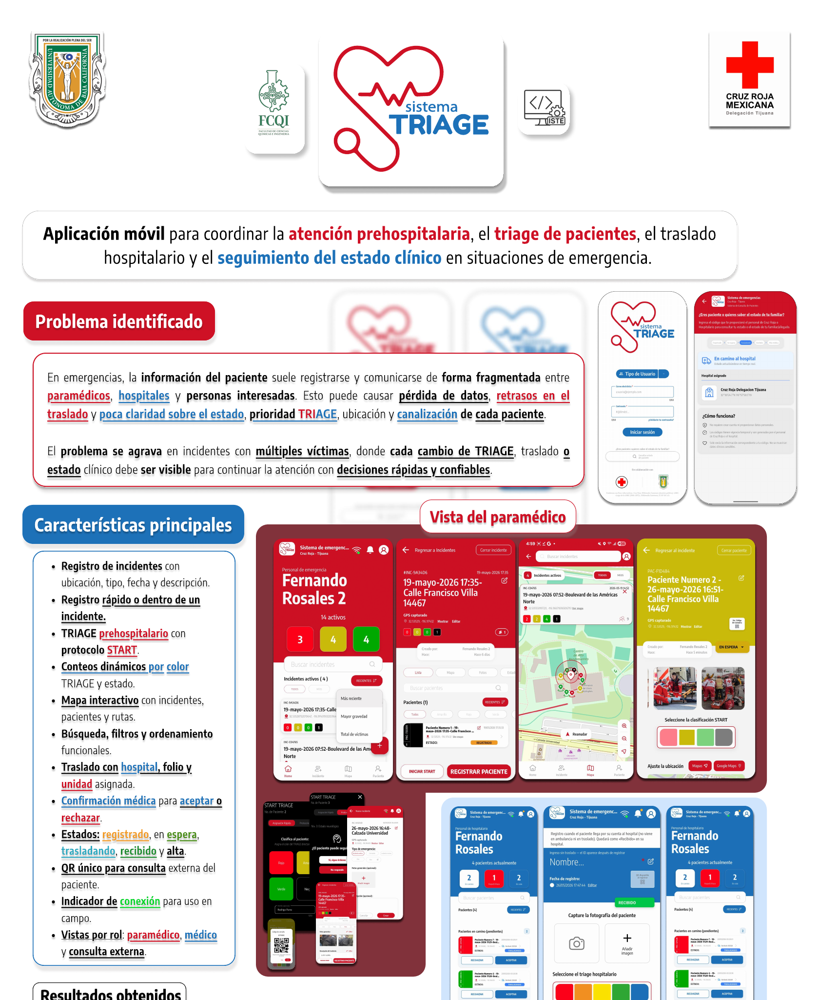
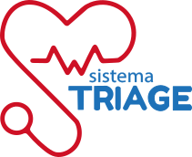
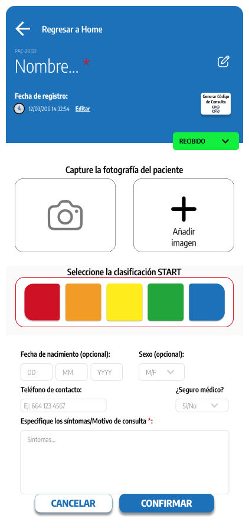
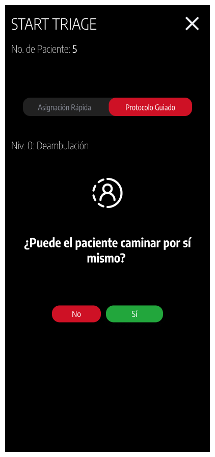

← Todos los proyectos
Proyecto / 03
SystemTriage
Información útil en momentos críticos
Proyecto móvil para apoyar flujos de triaje e incidentes de emergencia, con vistas para personal paramédico y hospitalario.

01 / Propósito
Una idea llevada a la práctica.
Proyecto vinculado con UABC y Cruz Roja, según la presentación pública del equipo.
Áreas y tecnologíasFlutter · Dart · diseño de experiencia
Esta ficha presenta el alcance documentado y material visual seleccionado. El código de desarrollo y los datos privados permanecen fuera de esta vitrina.
02 / Lo que hace
Funciones principales
- Registro de incidentes y pacientes con flujos orientados a roles.
- Clasificación de triaje guiada y vistas de seguimiento.
- Exploración visual de colas, mapas y coordinación de atención.
03 / Vista del proyecto
Así toma forma.
Se muestra un extracto del póster sin la lista de matrículas, junto con maquetas de diseño. El video enlazado corresponde a la presentación pública del proyecto.



04 / Explorar